Mission Kidsono · Consentement · Typologie (corpus élargi)
Typologie des écrans de consentement : ~40 exemples, classés
Corpus élargi à 33 apps top-tier (wellness, santé, fitness, mindfulness, tracking). Environ 40 écrans de consentement / permission / privacy extraits et classés. D'abord la logique de classification, puis les 5 familles en exemples (best-in-class ★ et contre-exemples signalés), puis le placement et l'anatomie best-in-class.
1 · Comment je les classe (2 axes)
Chaque écran se range en croisant à quoi on consent (la nature) et comment on le demande (le format).
| Famille (à quoi) | Formats observés (comment) |
|---|
| A · Données / RGPD (votre cas) | Écran dédié à cases · à toggles par finalité · à boutons · combiné réassurance+cases |
| B · Légal (CGU / Privacy) | Mention passive sur compte · case sur compte · écran dédié accept/refuse · confirmation d'âge |
| C · Permission technique | Pré-prompt maison (bénéfice / réglage / mascotte) → prompt système natif |
| D · Marketing | Case opt-in décochée, séparée |
| E · Transparence / information | Choix de visibilité · mention intégrée · donnée en déclaratif |
Rappel clé : case ou toggle = consentement granulaire (plusieurs finalités) ; bouton Accepter/Refuser = consentement global ; mention passive = légal contractuel seulement, jamais le tracking.
2 · Les 5 familles, en exemples
A · Consentement Données / RGPD
Le cœur pour Kidsono. Le meilleur combine : réassurance forte, granularité par finalité, refus/opt-out honnête.
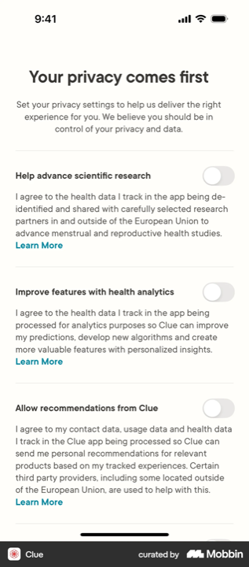
Clue ★ RGPD
Toggles par finalité
La référence RGPD : 1 toggle par usage (recherche / analytics / reco), tous OFF par défaut (vrai opt-in), « Learn More » par ligne, mention UE.
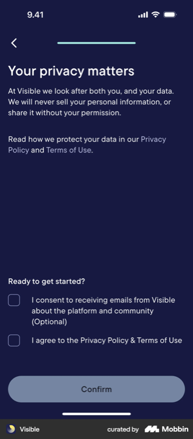
Visible ★
Combiné
« We will never sell… » + case CGU obligatoire + case marketing « (Optional) » non cochée. Confirm bloqué tant que le légal n'est pas coché.

Flo ★
Cases + hero
Réassurance-hero (bouclier), « never shared, delete anytime », 2 cases + « Accept all ».

Withings
Cartes granulaires
3 finalités en cartes séparées, marketing optionnel décoché.
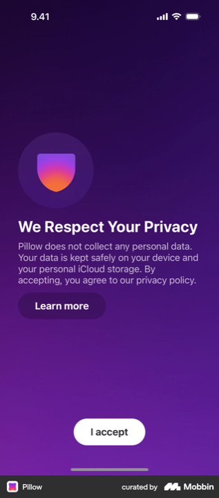
Pillow
Consentement-confiance
Le légal en argument : « does not collect… kept on your device » + « I accept ».
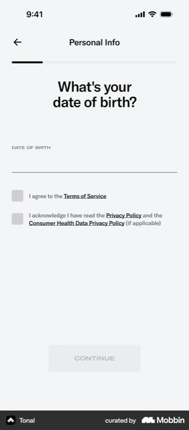
Tonal
Cases bloquantes
2 cases (CGU + donnée santé séparée), CTA grisé tant que non coché.

Lili
Boutons
Variante Refuser / Autoriser (pas de case). Consentement global.
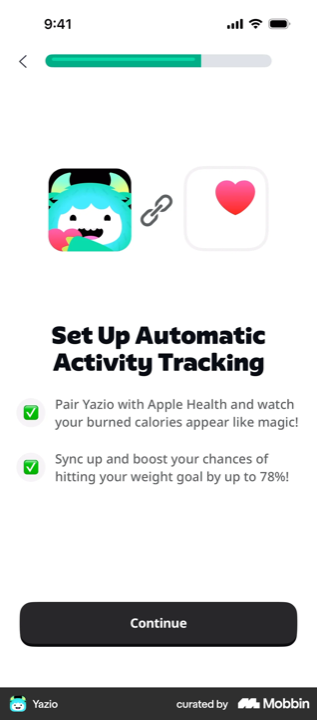
Yazio contre-ex
Cases pré-cochées
À éviter : cases pré-cochées + refus absent. Non conforme opt-in.
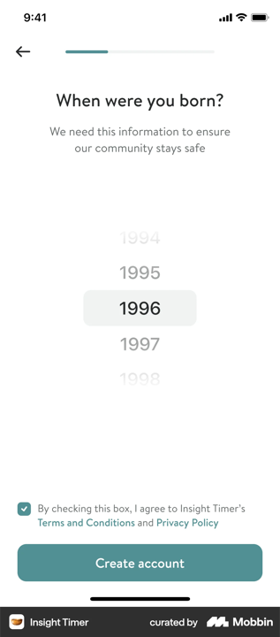
Insight Timer contre-ex
Case pré-cochée
À éviter : CGU pré-cochée glissée sous la saisie d'âge.
B · Consentement Légal (CGU / Privacy)
Adossé au compte. Du plus léger (mention passive) au plus strict (écran dédié avec refus). Le refus à égalité existe et humanise.
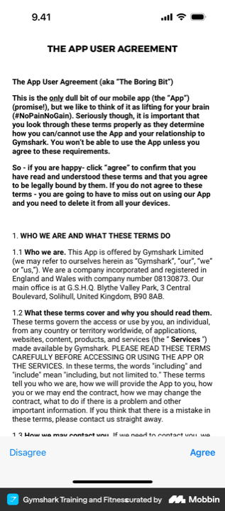
Gymshark ★ refus
Écran dédié · Disagree/Agree
Vrai refus à égalité + humour (« The Boring Bit ») qui humanise le juridique.
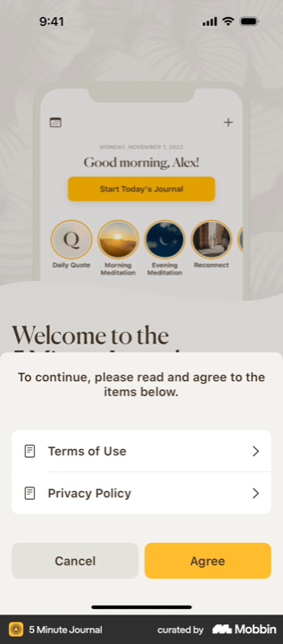
5 Minute Journal
Écran dédié · Cancel/Agree
2 documents distincts, refus « Cancel » présent. Propre mais friction tôt.

Headspace
Mention passive
« By continuing, you agree… » sous le CTA. Léger, pour le légal seulement.
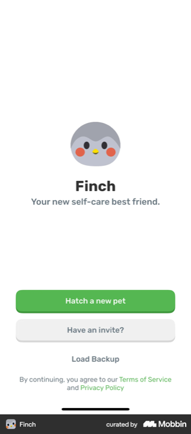
Finch
Mention passive
Mascotte + « en continuant vous acceptez », liens discrets.
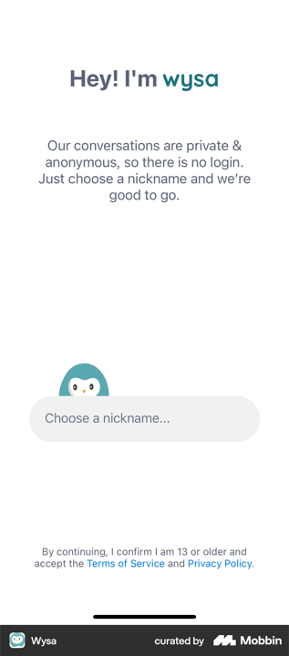
Wysa
Âge + anonymat
« I am 13 or older » + anonymat mis en avant, fondu dans l'accueil.

MyFitnessPal
Case sur compte
Une case sur l'écran compte. Contraignant, froid.
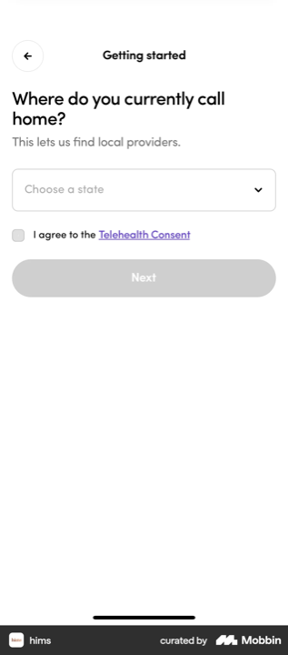
Hims
Case réglementaire
Consentement télésanté couplé à une question utile.

Pinkfong lourd
Cases multiples
Trop d'étapes : 3 cases + Read More.
C · Permission technique (pré-prompt → prompt système)
Toujours un pré-écran maison bénéfice-first, PUIS le dialogue iOS (non stylable). Trois façons de faire le pré-prompt : mascotte, réglage utile, aperçu concret.
C1 · Pré-prompt notifications
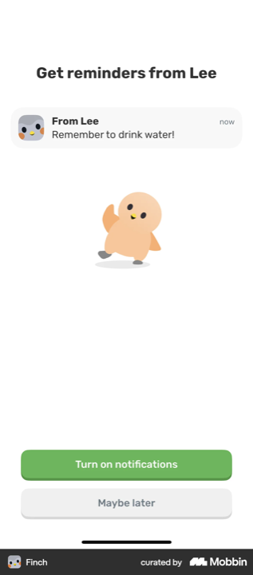
Finch ★
Mascotte + exemple
Modèle enfant : mascotte + notif exemple (« Remember to drink water! ») + « Maybe later » doux.
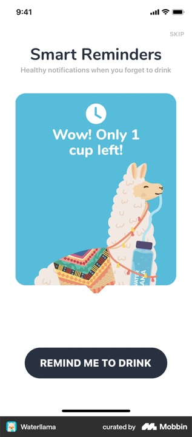
Waterllama ★
Mascotte ludique
La notif illustrée par le lama en situation. Ton famille, très transposable.
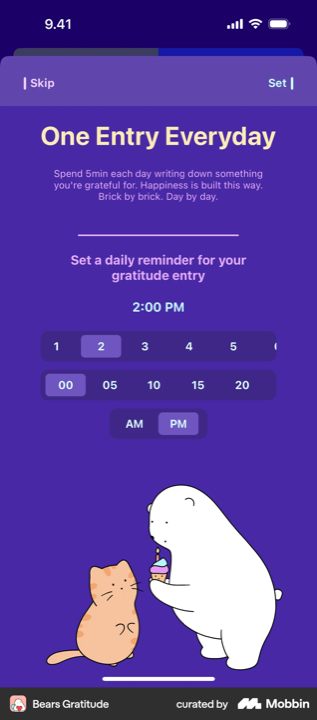
Bears Gratitude ★ refus
Créneau + refus symétrique
Choisir l'heure + Skip / Set à égalité (deux coins).
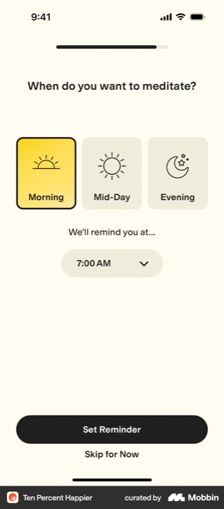
Ten Percent Happier
Réglage utile
« Quand veux-tu méditer ? » : la permission habillée en réglage.
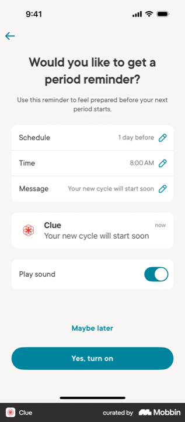
Clue
Aperçu + config
Montre la notif réelle + laisse configurer avant le prompt.
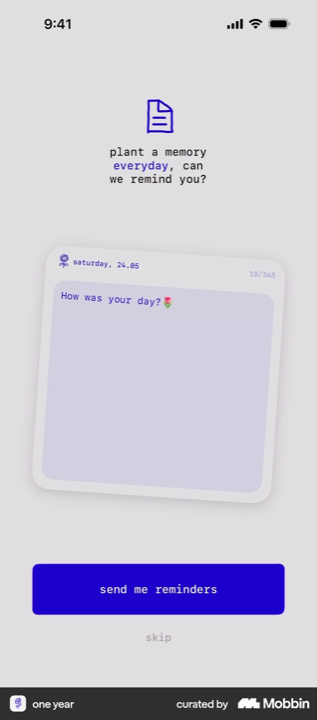
one year
Question douce
« can we remind you? » à la 1re personne, très soft.
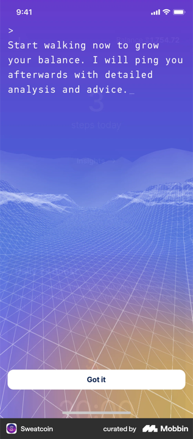
Sweatcoin
Refus propre
« Yes please / No thanks » : refus poli et lisible.
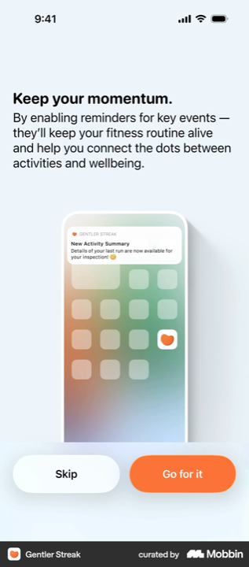
Gentler Streak
Pré-prompt notif
« Keep your momentum », Skip / Go for it.
C2 · Pré-prompt données santé / capteurs (dont micro, pertinent audio)
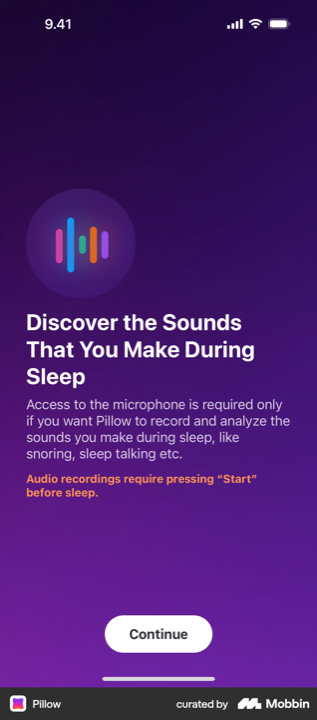
Pillow ★ audio
Pré-prompt micro
Pertinent Kidsono : le micro cadré par le bénéfice + « only if you want » (optionnel).

Gentler Streak
Réassurance sous CTA
« never leave this device » juste sous le bouton.
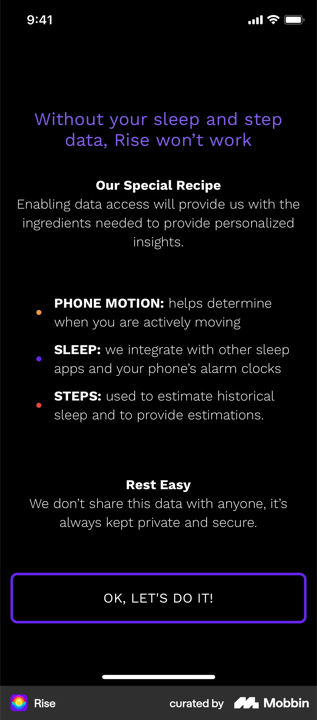
Rise
Dramatisation + privacy
« won't work without… » + « kept private and secure ».
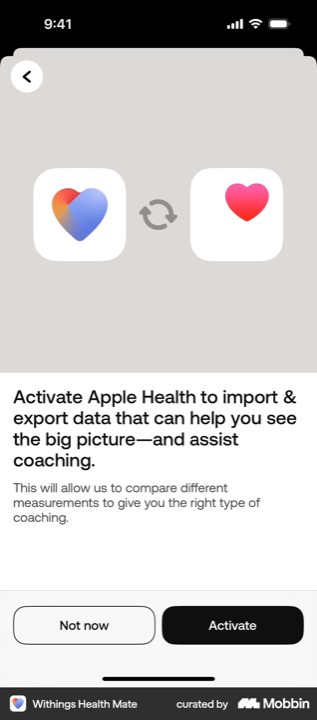
Withings
Bénéfice, refus à égalité
Not now / Activate côte à côte.
C3 · Prompt système natif (non stylable)

Lifesum
Prompt iOS
Boutons à égalité, non modifiable. Persuasion en amont.
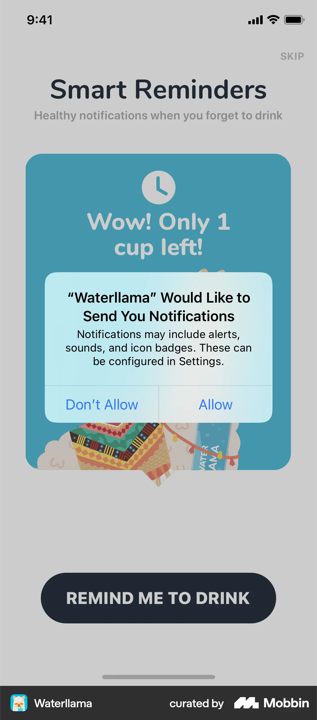
Waterllama
Prompt iOS
Déclenché juste après le pré-écran mascotte.
D · Opt-in Marketing
Toujours séparé du légal, non pré-coché. Le bon réflexe RGPD pour la comm parent.
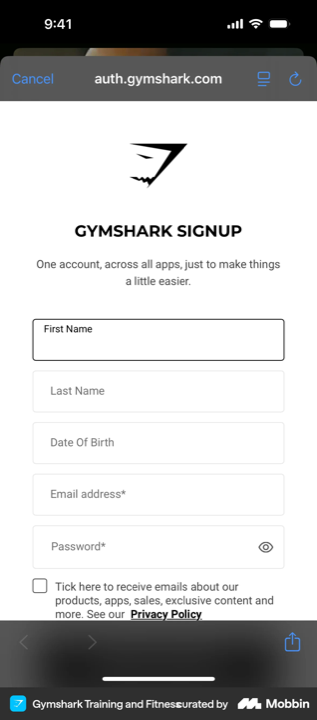
Gymshark ★
Case décochée
Modèle : case non pré-cochée, séparée du légal.

Gentler Streak
Newsletter
« No spam », « opt out any time », skippable.
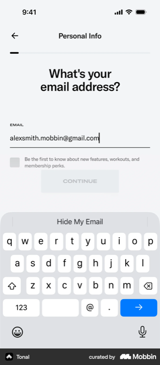
Tonal
Opt-in bénéfice
Intégré au champ email, non pré-coché, formulé bénéfice.
E · Transparence / information
Pas un consentement au sens strict : on informe d'un réglage (souvent la visibilité), avec où le changer. Pour Kidsono, le défaut doit être privé.
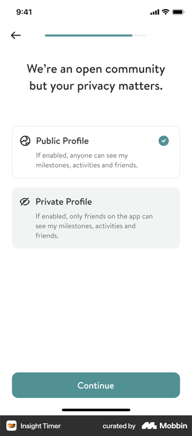
Insight Timer ★
Choix de visibilité
Public vs Privé, choix explicite. Défaut public à inverser pour enfants.
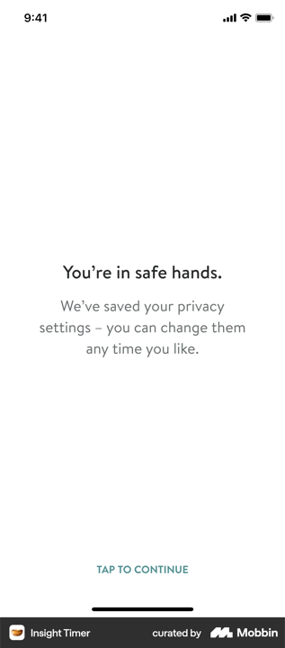
Insight Timer
Réassurance post-choix
« modifiable à tout moment » : désamorce l'anxiété.
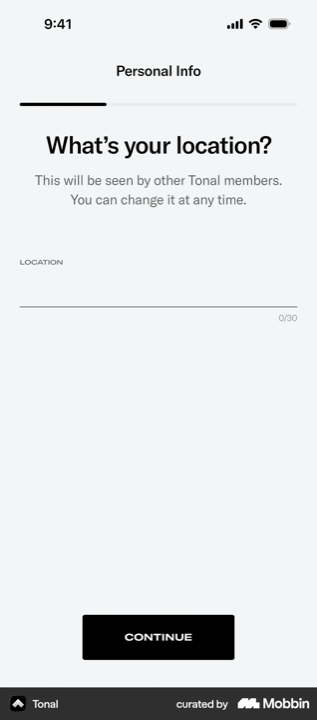
Tonal
Donnée en déclaratif
Localisation saisie in-app (pas de modale GPS) : contrôle total du wording.
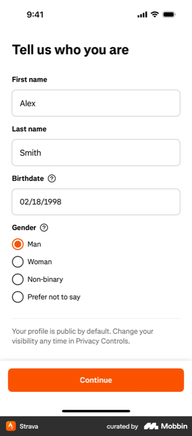
Strava
Mention intégrée
« Profil public par défaut, modifiable dans Privacy Controls ».
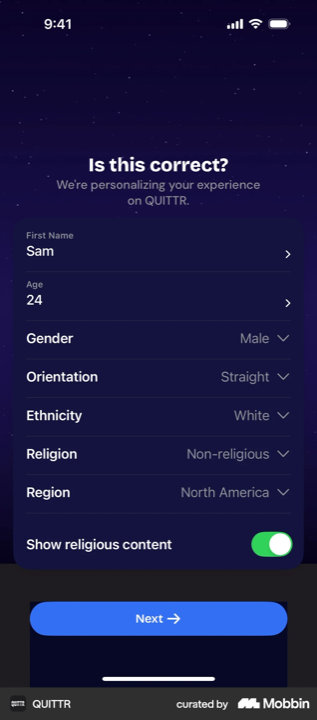
QUITTR
Toggle de contenu
Filtre de thème (contenu religieux) dans le récap profil.
3 · Le placement (rappel)
EntréeSplash + valeur
→
TôtA · Données
→
CompteB · Légal
→
CoeurQuiz / perso
→
SortiePaywall
→
TardC · Permissions
Données (A) = tôt
Avant toute perso (Flo au début, Withings/Clue après le compte). Le prix d'entrée.
Légal (B) = sur le compte
Toujours adossé au compte, jamais isolé.
Permissions (C) = tard
Après la valeur, précédées d'un pré-prompt.
4 · Ce que le corpus élargi ajoute
Les enseignements nouveaux
- Le meilleur RGPD est granulaire par toggles (Clue) : une finalité = un interrupteur, tous OFF par défaut. Plus honnête que les cases groupées.
- Le refus à égalité EXISTE (Gymshark « Disagree/Agree », 5 Minute Journal « Cancel/Agree », Bears « Skip/Set », Clue « Prefer not to share »). Donc c'est faisable, et souhaitable pour une app enfants.
- Le légal peut devenir un argument de confiance (Pillow : « vos données restent sur l'appareil ») plutôt qu'un mur juridique.
- Le pré-prompt « réglage utile » (choisir l'heure de rappel : Ten Percent Happier, Bears, Clue) est le plus habile : la permission devient un service.
- La mascotte porte très bien la notif (Finch, Waterllama) : ton famille, directement transposable à Kidsono.
- La donnée sensible peut être déclarative (Tonal) : saisie in-app plutôt que modale système, pour garder le contrôle du wording.
- Contre-exemples nets : cases pré-cochées (Yazio, Insight Timer) et refus effacé, à ne pas reproduire (encore plus sur enfants).
L'anatomie best-in-class pour Kidsono (mise à jour)
- Bandeau « Pour les parents » notre ajout.
- Illustration protectrice en DA Kidsono (bouclier Flo/Withings, ou argument-confiance Pillow « chez vous »).
- Titre court + promesse AVANT le juridique : « pas de pub, jamais vendu, effaçable » (Flo, Visible « never sell »).
- Le choix : si global, boutons Accepter/Refuser à égalité (Gymshark) ; si plusieurs finalités, toggles par finalité OFF par défaut (Clue), marketing séparé (Gymshark/Visible).
- Réassurance sous le CTA (Gentler Streak).
- Pied : lien politique + « n'empêche pas d'écouter » + « modifiable à tout moment » (Insight Timer).
L'avis
Force : ~40 écrans sur pièces, une grille de lecture claire, et des best-in-class nets (Clue pour la granularité, Visible pour le combiné, Gymshark pour le refus, Finch/Waterllama pour le ton mascotte). Tu as largement de quoi trancher format et granularité.
Risques : corpus wellness/santé, sans contrainte enfants. Deux adaptations : ton « parents » et refus à égalité (le panel le minore souvent, sauf Gymshark/Bears/Clue).
Position : en fusionnant Clue + Visible + Gymshark + Gentler Streak, tu serais au niveau des meilleurs, et au-dessus sur l'équité du refus.
Typologie exhaustive, mission Kidsono. Corpus 33 apps (dont 22 ajoutées), ~40 écrans de consentement lus en pleine résolution via 5 relevés parallèles. Captures dans benchmark-consentement/apps/ (+ Lili, Pinkfong du corpus onboarding). Complète le benchmark visuel et le compte rendu écran.